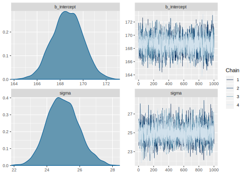

4.3 Summarizing and evaluation the posterior distribution
We fit a Bayesian model to get the posterior distribution, but since we cannot derive it analytically, fitting a brms model (or any other MCMC-based approximation) will yield samples from the posterior.
4.3.1 Output of brms
See below in listing ??, but notice that b_Intercept corresponds to our \(\mu\) and that lp is not really part of the posterior, it’s the density of the unnormalized posterior for each iteration.
## 'data.frame': 4000 obs. of 3 variables:
## $ b_Intercept: num 169 170 170 167 168 ...
## $ sigma : num 25.2 25.4 25.4 23.6 24.7 ...
## $ lp__ : num -1688 -1688 -1688 -1689 -1688 ...We can plot the histogram and chains of the samples:

And brms provides a nice summary:
## Family: gaussian
## Links: mu = identity; sigma = identity
## Formula: rt ~ 1
## Data: df_noreading_data (Number of observations: 361)
## Samples: 4 chains, each with iter = 2000; warmup = 1000; thin = 1;
## total post-warmup samples = 4000
##
## Population-Level Effects:
## Estimate Est.Error l-95% CI u-95% CI Rhat
## Intercept 168.64 1.32 166.06 171.17 1.00
## Bulk_ESS Tail_ESS
## Intercept 2918 2127
##
## Family Specific Parameters:
## Estimate Est.Error l-95% CI u-95% CI Rhat
## sigma 24.98 0.95 23.21 26.97 1.00
## Bulk_ESS Tail_ESS
## sigma 3213 2592
##
## Samples were drawn using sampling(NUTS). For each parameter, Eff.Sample
## is a crude measure of effective sample size, and Rhat is the potential
## scale reduction factor on split chains (at convergence, Rhat = 1).Notice that the Estimate is just the mean of the posterior sample, and
CI are the 95% quantiles:
## [1] 168.6## 2.5% 97.5%
## 166.1 171.2We see that we can fit our model without problems, and we get some posterior distributions for our parameters. Is the model adequate to capture the data?
4.3.2 Posterior predictive checks
We use posterior predictive checks to examine the “descriptive adequacy” of our models (???, Chapter 6; ???): the observed data should look plausible under the posterior predictive distribution.
Similarly to the prior predictive distribution, the posterior predictive distribution is a distribution of datasets (in practice we have one dataset for each iteration of the sampler). In contrast to the prior predictive distribution, here the model generates the datasets based on the posterior distributions of its parameters. In other words, given the posterior of the parameters of the model, the posterior predictive distribution shows how other data may look like.
Achieving descriptive adequacy means that the current data could have been predicted with the model. While passing atest of descriptive adequacy is not strong evidence in favor of a model, a major failure in descriptive adequacy can be interpreted as strong evidence against a model (???). Thus, posterior predictive checking is an important sanity check to assess whether the model behavior is reasonable.
Once we have the posterior distribution \(p(\Theta\mid y)\), we can derive the predictions based on this distribution:
\[\begin{equation} p(y_{pred}\mid y ) = \int p(y_{pred}, \Theta\mid y)\, d\Theta= \int p(y_{pred}\mid \Theta,y)p(\Theta\mid y)\, d\Theta \end{equation}\]
Assuming that past and future observations are conditionally independent given \(\Theta\), i.e., \(p(y_{pred}\mid \Theta,y)= p(y_{pred}\mid \Theta)\), we can write:
\[\begin{equation} p(y_{pred}\mid y )=\int p(y_{pred}\mid \Theta) p(\Theta\mid y)\, d\Theta \end{equation}\]
Note that we are conditioning \(y_{pred}\) only on \(y\), we do not condition on what we don’t know (\(\Theta\)); we integrate out the unknown parameters.
This posterior predictive distribution is different from the frequentist approach, which gives only a predictive distribution of \(y_{pred}\) given our estimate of \(\theta\) (a point value).
We can use pp_check then to investigate how well the observed distribution of RTs fit the predicted based on some (11 and 100) samples of the posterior; see figure 4.3 and 4.4.
FIGURE 4.3: Posterior predictive check of the model fit_press.
FIGURE 4.4: Posterior predictive check of the model fit_press.
Notice that the real data is slightly skewed and has no values shorter than 100 ms, while the predictive distributions are centered and symmetrical. We’ll come back to this issue in ??.